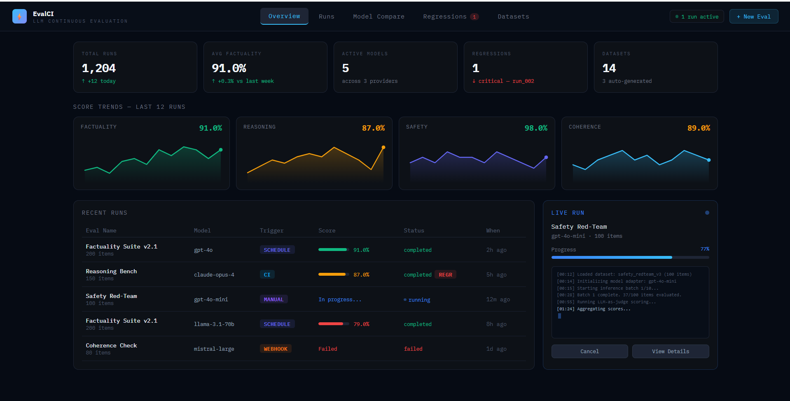
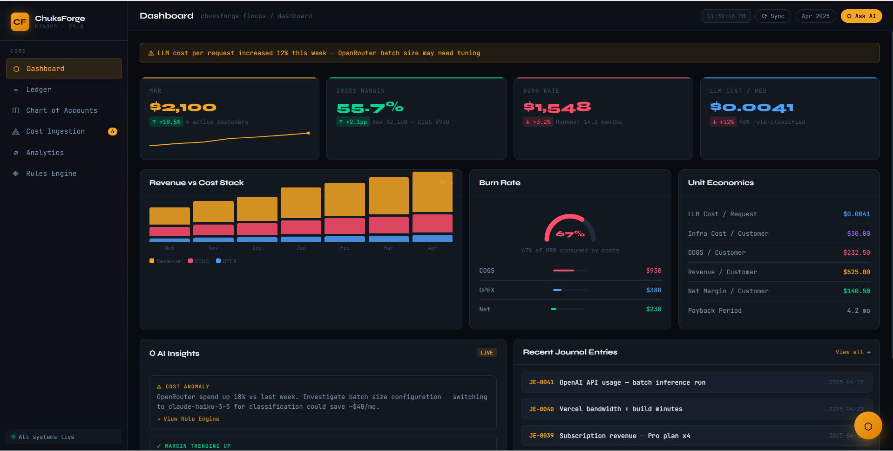
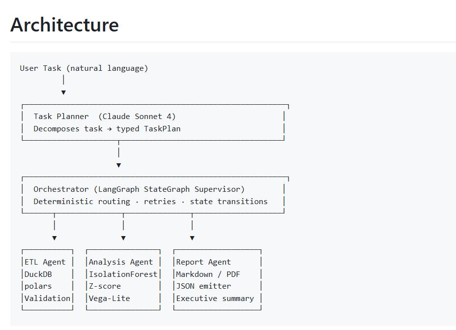
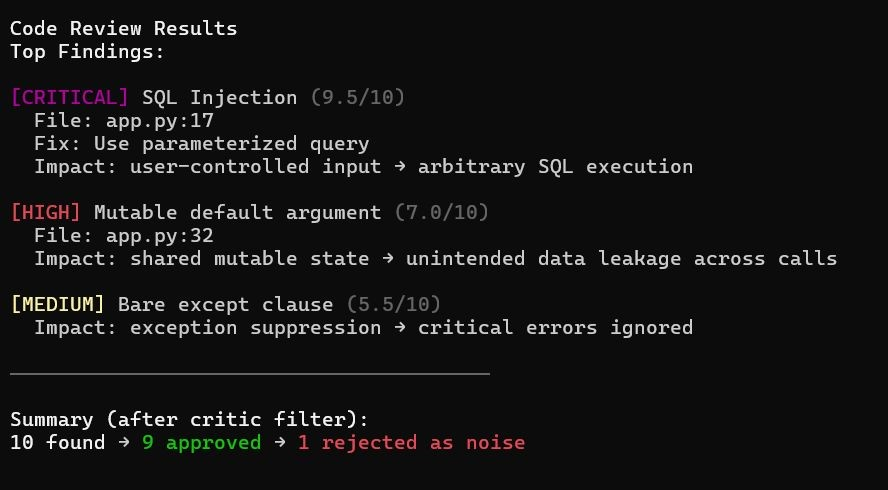
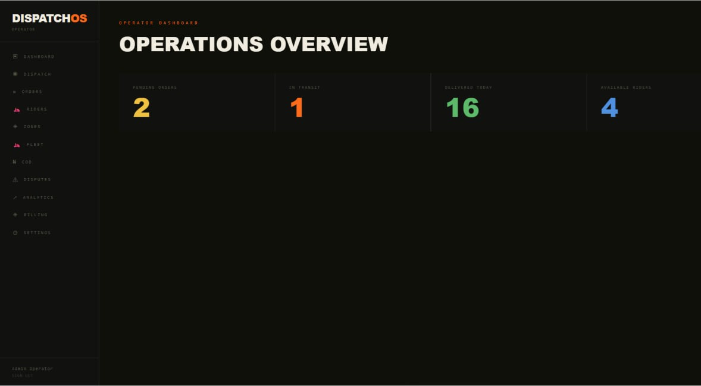

Products & projects
Click a project to expand architecture, contributions, and current status.

A merchant messages BOS the way they already message customers, and it records sales, tracks expenses and debtors, manages inventory, and sends daily business briefings automatically. It has grown into a full financial back office: PDF invoicing and device-sale receipts generated from a single message, staff and multi-branch support, bulk debtor clearing, and analytics. Plus, more recently, a companion mobile and web app built on the same backend.
- Shipped the product and owned production hardening pre-launch. Fixed a cross-region infrastructure misconfiguration that cut latency roughly 4x, plus rate limiting, dead-letter queues, and compliance work
- Rebuilt the natural-language parser architecture and hardened it against real Nigerian merchant phrasing across many rounds of review
- Shipped invoicing, device-sale receipts, staff/branch management, bulk debt clearing, and analytics
- Extended the product into a full React Native / Expo mobile and web app, reusing the existing FastAPI backend end-to-end
- Diagnosed two separate production incidents to root cause, each closed out with a regression test
Confidential commercial engagement — code and architecture stay private; details available on request.

Instead of comparing scores over time and hoping drift is visible, EvalCI tests against an explicit baseline and fails a build the way a broken unit test would. The detection engine, evalci-core, is open-core, Apache-2.0 licensed and pip-installable, self-hosted from day one via Docker Compose or Kubernetes. It's positioned directly against Braintrust, LangSmith, and Langfuse, and is currently in early access with design partners.
- Built the platform from scratch across five phases: FastAPI, Celery, PostgreSQL, Redis, Kubernetes, and a Next.js dashboard
- Migrated the scheduler from APScheduler to Celery Beat, uncovering and fixing several deep infrastructure bugs
- Open-sourced the regression-detection engine with a 28-item golden dataset spanning four domains
- Built billing (Paystack and Flutterwave), a GitHub Action for automated PR comments, and a 15-minute self-host quickstart
pip install evalci-core

A real double-entry ledger with an 80-account Nigerian-compliant chart of accounts, six built-in billing adapters (OpenAI, Anthropic, Vercel, Railway, Supabase, OpenRouter), and Paystack billing on top. The kind of financial infrastructure most AI startups improvise in a spreadsheet until it breaks.
- Designed the double-entry ledger and chart of accounts from scratch, plus a priority-queue rules engine and RBAC
- Built six billing adapters for the platforms AI companies actually pay for
- Deployed to Railway with Supabase, resolving PgBouncer prepared-statement errors, a JWT persistence bug, and orphaned queue-connection issues
- Added manual accounting tools: a cost-event modal, a Nigerian-bank-format CSV import wizard, and 15 journal-entry templates
Confidential commercial engagement — code and architecture stay private; details available on request.

A LangGraph-based multi-agent pipeline for portfolio analytics, using DuckDB and polars for fast local analytics and FastAPI to serve the results, with a real test suite behind it rather than a hand-wavy demo.
- 511 passing tests at 84% coverage
- Delivered with a full architecture diagram and developer handoff documentation

A multi-agent code review system that addresses the core failure mode of LLM-based review tools: noisy, repetitive, low-priority findings that slow development down rather than speed it up. A critic loop re-evaluates initial LLM output against static analysis results, deduplicates findings, and produces a ranked report suitable for direct CI/CD consumption.
- Designed the Planner → Critic → Rewriter → Reconciler agent pipeline in LangGraph
- Built a critic loop that re-evaluates LLM findings against deterministic static analysis before surfacing results
- Implemented confidence-scored deduplication and severity-based prioritization
- Applied an open-core strategy: public tooling and schemas, private prompt architecture and calibration logic

A last-mile logistics platform built as a Turborepo monorepo, combining PostgreSQL/PostGIS for geospatial dispatch logic with Mapbox for routing, Paystack for payments, and Termii for SMS.
- Built the dispatch, rider-scoring, and order-tracking core across a five-phase delivery
- Post-build inspection pass found and fixed four confirmed bugs, including a seed-data sequence collision
Confidential commercial engagement — code and architecture stay private; details available on request.